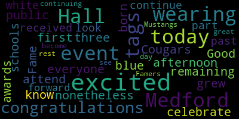
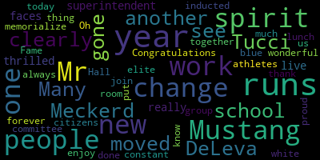
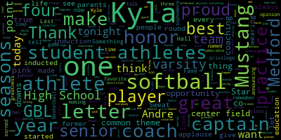

[SPEAKER_15]: But before we get started, I'd like to take a few minutes to acknowledge and thank a few people who are here today. First of all, the Hall of Fame Board of Directors is here today, many of them, almost every single one of us. If you would please stand as I read your name. Janet Lennon McGuire. And then last but not least, Megan Richard who is our Vice President. Everything that works today, everything that's good about this event, all the logistics, the wheels, everything, give credit to Megan. If anything goes wrong, talk to me. But again, thank you to the board. We've had a great year leading up to this induction ceremony. Very talented and what's the word? I guess people who contribute a lot of their time and good thoughts to the successful fate of the board. OK. I'd also like to recognize a few individuals. I'm not sure if any of them are here. However, first of all, this is Josephine Monquette, who's the wife of Hall of Famer Bill Monquette. Unfortunately, something came up with her family. She could not join us today. She said she'd be back at the next one, so hopefully we'll see her there. But she and Bill have been, over the years, very consistent and generous supporters of the Hall of Fame. Also, Tom Frieda, did Tom make it? Tom's our tax guy, he volunteers to do that. Some people twisted his arm to do it, but he still does it anyway. He tries to keep us out of trouble. And Chris Hurley, did Chris make it? Is Chris here? Chris, you may recognize his name, he's one of the sports writers. for the local coverage of the federal transcript and other cities and towns nearby. And you may also have noticed the 11 or 12 articles that he wrote about almost every inductee that's here today. But certainly all the athletes that are here today were had articles written about them. So thanks to Chris. Occasionally at our lecture ceremonies, we also give a special thank you to someone. Reggie, come up. From time to time, there are individuals who will, for a sustained period of time, help us. And I'm going to let Reggie carry it from here.
[SPEAKER_31]: Good afternoon, everyone. It's my pleasure to introduce a young man who's known to you all. From January of 19, excuse me, January of 1988 to January of 2016, he was the mayor of the city of Medford. During that time, he rebuilt all the elementary and public, elementary and middle schools, put some stipends, came out to be $110 million. He's always been a supporter or a staunch supporter of the Method High School sports and the Mustang Hall of Fame. Today, we would like to present to Michael J. McGlynn, in appreciation for your many years of service and support of the Mustang Hall of Fame and the Mustang High School Athletics, presented by the Mustang Hall of Fame, November 18th, 2018, Mr. McGlynn.
[SPEAKER_15]: Next, I'd like to introduce a few supporters of the Hall of Fame, each of whom will make a few remarks as I introduce them. First of all, the principal of the Medford Vocational Technical High School, Chad Fallon.
[Unidentified]: Chad, are you here? If you have a few words, great.
[SPEAKER_29]: Thank you for having me. I just finished my first year at Medford. This event is surely one of the many reasons why Medford has been such a good choice for me. So thank you for giving me a great first year. Congratulations to all of you tonight, and enjoy the afternoon.
[SPEAKER_15]: The headmaster of Medford High School, Mr. Paul DeLiva.
[D'Alleva]: The first thing I'd like to say is I'm back. First of all, I want to thank everyone. It's a wonderful honor to be asked to be here tonight, especially for me because I'm looking at students that I had. I was a teacher at Mekong High School. and to see how they developed, and I've coached some of them, I've taught them in a lot of ways, and just seeing those faces really, really resonates to me that why we do what we do as educators. People on the board, for example, Mr. Paul Malatow was sort of like a mentor of mine. He would tell me, you know, school never ends at 218, and that's true, especially when it comes to athletics, because you're there all the time, 24-7, showing what you care about Medford High School. And just honored to be in this room with so many great people and congratulations everyone that is being inducted today. Thank you.
[SPEAKER_15]: The Superintendent of Medford Public Schools, Dr. Marice Edouard-Vincent.
[Edouard-Vincent]: Good afternoon everyone. I am so excited to be here today. This is my very first Hall of Fame event. As you know, I was born in Medford and grew up in Medford, but I did not attend public schools. remaining three are Cougars. But nonetheless, I'm very, very excited to be here to celebrate with all of you. All of you who are wearing the blue tags, congratulations on the awards that you've received in the past. And those of you who are wearing the white tags, congratulations today. I'm so excited to be part of this event with you. And I continue, I look forward to continuing to see more Mustangs become Hall of Famers. So have a great rest of the day.
[SPEAKER_15]: the Honorable Stephanie Kirkpatrick. Good afternoon, everyone.
[Burke]: As you can clearly see, Meckerd has gone through a year of change. Many people have moved from one school to another, like Mr. Tucci and Mr. DeLeva. and a new superintendent, so we're really thrilled to have such new faces and just the spirit, the Mustang spirit live on. Congratulations to all those being inducted today. You join a very elite group of people. And I know that your blue and white runs through. It runs in me. It runs in most of us in this room. And I'm forever proud to be a Mustang, always. And thank you to the Hall of Fame committee for all the work you do. Oh, we've had so much change. The one thing that is constant has been the work that you have all done year in and year out to put this together and to memorialize the wonderful athletes and citizens that they all are. So enjoy your lunch.
[SPEAKER_15]: Hopefully, does that look better? I just, I can't lean. Can you hear me? Right. Because next I'm throwing the mic out, I'm going to scream. And my voice is not quite what it used to be when I was yelling from behind the plate or on the ice. So I'd also like to acknowledge Diane Caldwell, who's here today. Thank you for joining us and recognizing the inductees and soon-to-be new members of the Hall of Fame. I've only been on the board for about eight years and four inductions, and I don't know how far back when I'm gonna say it's true, but this is the first time that I know of personally the mayor, the superintendent, the associate superintendent, the headmaster, the principal of a vocational school, Did I forget anyone? Right. Two principals. Two principals. Nick, 2G, a hall of famer as well. You may have had three, maybe four, but never whatever number that adds up to. So thank you all very much. I don't think you will realize how much this means to the attendees here and the inductees in particular, but also the board. We really appreciate that kind of support for our organization. So thank you again. Today we'll be inducting 14 new members into the Mustang Hall of Fame. This is our primary purpose. Our mission statement, which you can find on our website online if you want to read it again. You don't have to take notes now, but our mission statement says, The Medford Mustang Hall of Fame is an organization dedicated to honoring and recognizing those exceptional athletes, coaches, community leaders, alumni, and teams who have made outstanding contributions to the Medford High School Athletic Program. In addition to bridging all generations of Medford High School athletes, coaches, community leaders, alumni, and teams, the Mustang Hall of Fame promotes the current Medford High School Athletic Program. We take this mission very seriously. You may have noticed the phrase bridging generations. Well, today we have an inductee from the class of 2013, another inductee from the class of 1999, I think, another one from 1934, another one from 1945, and another one from, what's the number? 1906. I don't know how many generations that is, but it's a lot. And so I think it's important to recognize as far back as we can and collect information on people who should be considered for induction if not inducted. But that's a pretty good span of athletic talent across a different high school. You may also have noticed that, some of you anyway, that we've added two categories to be considered for induction. We've added teams, which in the past were honored, but now teams can be inducted. We've also added a category called alumni. You'll be reading more about this and hearing more about it as we get into next year, but get your thinking caps on, because one thing we never had enough of is nominations. Speaking of nominations, we accept nominations 365 days a year, except in late years when we take it for an extra day. I'm only exaggerating a little. We never have enough nominations of people, anyone to nominate, anywhere, to be inducted into the Hall of Fame. We only have two requirements, generally, for applicants in particular, is that they be a graduate of Medford High School, and they be of five years. Other than that, there are no specific criteria. But if you look through the list of accomplishments of the folks who are being inducted today, I think it's pages four or five, you'll see some pretty significant accomplishments. But there are more folks out there who have similar accomplishments that we don't know about. The board does not nominate all the inductees. We may even nominate one or two. All the other nominations come from people who are here in this room, people who aren't in the room today who have nominated in the past. It comes from the community of athletics and the community of Medford interested alums, I guess, is the best way to put it. People who have a connection to Medford High School and Medford High School athletics. So if you know anyone, please let us know. It starts with a name, and then we go from there. The process, also once a person is nominated, their nomination remains active or remains in consideration every time we have an induction ceremony. So we don't need to induct someone more than once, but we can always add more details to their folder for consideration. In terms of the process, the deadline for nominations for this class was June 30th. Normally it's June 30th of the year of the induction, which will be June 30th, 2020, so there's plenty of time to start collecting that information for your next nomination. And the board is always available, any board member and every board member is available to help nominations. So if you're not sure how to do it, let's start with a name and then go from there. But a board member will be happy to work with anyone. And if it sounds like I'm talking about nominations too much, I'm not. As I just said, we get a lot of good ones, but we never get enough. There are a lot more athletes out there that deserve to be recognized, as well as community service and teams and so forth. If you have any questions about the nomination process, please see me or any member of the board and they'll direct you to me because no one else wants to talk about it. On the inside cover and on page three, you can see our agenda. We ask that you remain the entire ceremony. Out of respect in particular to the nominees who will be inducted toward the end of the program, we also have a group a picture for the new members of the Hall of Fame and others at the end of the ceremony. So we do hope that you, we do expect that you will stay for that. We will do our best to stay on time. So as has been our tradition over the years, we will induct our first class, first inductee into the Hall of Fame before we have our meal. The way the process will work is I will introduce a person who is going to do the introduction of the inductee. The inductee will come up after the introduction, receive a plaque, and give his or her acceptance speech. Then we'll take a picture of the inductee and move on to the next. So with that, we'll start our first inductee induction. So John McAdam will be introducing our first inductee.
[SPEAKER_10]: My sincere congratulations to the Mustang Hall of Fame class of 2018. Your induction today is an honor that is well-deserved by each of you. Nathan Clement is our first inductee this afternoon. He's a young man who epitomizes three qualities expected of a Hall of Fame. excellence in athleticism, leadership, and character. Nate's athletic accomplishments are impressive. He earned a total of eight letters as a Mustang, four letters in football, two letters in indoor track, and two letters in outdoor track. He was named to the Greater Boston League All-Star teams with all three sports as a junior and senior. Nate was also honored by the Medford Mercury as an All-Star last year, both as a junior and senior, and senior year he was selected as a Harry Adanis All-Star. In addition, Nate was the 2013 recipient of both the Edgeling Award, as the Outstanding Senior Male Athlete at Metro High School, and the Feeley Family Award Scholarship. Nate's leadership skills and character were clearly evident to his teammates and coaches as he was chosen to captain all three teams this senior year. Head coach Jason Lassamento had this to say about Nate. Well, Nate was instrumental in keeping his class of teammates together during some very difficult times and during a coaching transition that happened midway through his senior year. He was a consistent resource that people could lean on when times were tough, and his teammates looked to him for inspiration. He was part of the glue that kept things afloat and had a long-lasting impact on future generations of athletes at Metcalf High School. He always wanted to leave a program better than it was when he came in, and we as coaches are forever grateful that we had the opportunity to coach him. Track coach Tommy Lynch called me, quote, a great, great kid, a great team captain, a great role model, and I was lucky to have coached him. In a 2012 midterm transcript article by Chris Hurley, Nate defined his role as the team captain. Quote, the role of captain is about leading the way, getting the other athletes in the right mindset, instead of having them feel uncomfortable and nervous before they head into the track for the game. In that article, note Nate was also quoted saying, I'm usually chairing my fellow Mustangs on. I don't really think it's fair to chair only for your specific team. I feel like I have to support every other sport at the high school as well. Nate's resume of proven excellence in athleticism, leadership, and character make him a true MHS Hall of Famer, as an athlete and as a person. On a personal note, one day after class six years ago, Nate shared two of his goals with me. One was to become a Mustang Hall of Famer, and the other was to become a future Medford High School athletic director. Kwame Maloney will be pleased to know that you have made it to the Hall of Fame and relieved to know that you have chosen to pursue a career in physical therapy. It is indeed my honor and my great privilege to present our newest member of the Mustang Hall of Fame, Nathan Clement.
[SPEAKER_19]: So first, I'd like to thank Mr. McGadden for the speech. Mr. McGadden was a huge inspiration to me during my time at Norfolk High. He was one of my biggest supports during my time. So first thing, I'd like to thank the Method Hall of Fame for the induction into the class of 2018. It's an incredible honor to be selected and recognized by my fellow peers. And this accomplishment would have never been possible without my family, friends, coaching staff, and teachers. I would like to give a special thank you to my mom and dad back there. For always instilling the idea of being the hardest worker possible and that everything else will follow. And I'd also like to give a special thank you to my brother, who's also back there, for introducing the game of football into my life and being my biggest role model for that sport. I want to thank Mr. Maloney, Mr. Howard, Ms. Bowler, Mr. McGavin once again, Mr. Dempsey for always believing in me, placing me in the best of situations to succeed, making my overall high school athletic experience the best I could possibly be. As well as Coach Lynch and Mr. Richard for pushing me to pursue my career as a track and field. All I ever wanted to do was be the best example of a Mustang teammate and to support everyone around me. And I can truly say I have no regrets on the effort I put towards that goal. Thank you and God bless.
[SPEAKER_09]: okay in front of the platform right in front of the podium
[SPEAKER_15]: OK, we're just about to get to the real, but a couple quick points here. First of all, we do have some Mustang Hall of Famers in the room today, in addition to the 14 that will be inducted. I'm going to read all the names, and we'll take your applause. When you hear your name, please stand. And if I missed anyone, please wave after I get to the end of the list. So we have with us today Hall of Famers Bill Edgerly, Charlie Pagliarulo, Chuck Andre, David Cresta, Dave Paltari, Ed Finn, Is there anyone else that I can think of? I didn't notice coming in, thanks for reaching. Oh, Ron Zampel. In addition, some of these folks are longtime members of the All Fame board. So they not only were honored, they served to honor others as well. So thank you. And Nick Tucci didn't wave his hand because not only is he He's talented, but he's not as good as he is talented. So maybe it's just your time to sleep on Monday, right? No? OK. We also have with us some potential future ball favors where it happens. The captains, where are the captains? Come on, stand up, stand up. We have seven current or just named captains from different high school varsity sports. Six, is someone missing? In any case, the people standing. So hopefully, if you have a winter sport or a spring sport coming up, the stories you tell about seeing this will inspire your teams a little bit more than they might have otherwise. But thank you for joining us. OK, now. Now another call of favor, past president and current board member, Coach Joe Barletta will recite our blessing for the week.
[SPEAKER_32]: Dear Lord, we thank you for granting us this wonderful, special day to honor our new inductees. As we enter this time of Thanksgiving, Let us take pause to remember that all good things come from your bounty. As we share this day in celebration, love, and friendship, let us also remember those members of the Hall of Fame who have passed on. We thank you, Lord, for all the blessings, large and small. When I stopped to count them, so many I recalled. We thank you for your blessings on our honorees, our families, and our friends. We thank you for watching over us, guiding us, and protecting us from all evil. We now ask you, Lord, for your blessings to the food which we are about to receive from your bounty, for those who have prepared it, and for those who will serve it. Through Christ our Lord, amen. The next person to introduce
[SPEAKER_15]: The Hall of Fame conductor will be Sarah Sweat-Sizzle.
[SPEAKER_06]: First off, I'd like to thank the Hall of Fame committee for putting on another great Sunday afternoon, especially with the fans. I feel like I need to do one every two years. Congratulations to all the adoptees today. It is quite an honor to be adopted to the Mustang Hall of Fame. As dwarf-y as it sounds, when you walk through the Repertory Halls and see names on the wall, it's a pretty cool feeling. Something you can show your kids. I don't care less about yours than I do about mine. It's a great honor today to introduce Nicole Bilotto to the Hall of Fame. I first had the pleasure to coach Nicole during soccer. After our first meeting, I had no idea if we were going to loss, what her score was, But I remember Jolie being very upset at letting a couple of goals in. She said, well, it's fine, it's the first game you're bowling, you don't let goals in. But I quickly realized that was her intensity and passion that she'll rush at every single game. But then I realized she played softball, and I was like, yes, bring the intensity! In all my years coaching or even playing, I had never seen a path that was as intensive as Nicole's, in that five, two, and a half frame. She never had to worry she was ready for the game. She thrived in the competition. Not only would I be intimidated to play against Nicole, I would be intimidated about coaching against her. In fact, I think your stuff, Hallie, was pretty intimidating, by the way. Nicole played third base. I'm not sure if anything happened about pass her. She might have dropped a double, but nothing about pass her. Third base is an integral position to one conference. In the years past, we've had some third basemen who tell us to move in and take a couple of steps, which is totally understandable. Coach Schauffele and I decide to move Nicole in and we look over, and then she goes, Nicole, get back, you're going to get killed. She could roll her eyes, unmove, and then pick up whatever was hit at her. Not only was she stellar in the field, she was a complete threat on offense. She had an unbelievable amount of power, 4.16 batting average, 15 home runs, 83 hour yards. She had speed, and if you know softball, that's a dangerous combo. It was fun to see her play appearances and how she attacked the ball by the fastest hands I've ever seen. But even more fun to see her on the bases and watch the other teams try to get her out. Nicole also played basketball, and although I didn't have the chance to coach her in that, I can easily picture in my head how she would play the game. She actually bet me freshman year that she would dump my CVM. I told her it would never happen. Before you tell me, I trust her dreams. When you look at her, you make the same bad as I do. In fact, I think she still owes me the $500 from that bet. Ladies and gentlemen, the ball of laughter.
[SPEAKER_02]: I wouldn't be here today or who I am today without some of the kind of high scores. Whether it's teaching me patience, whether it's teaching me patience, girl's basketball games the way Bruce is with me again, or teaching me how to never give up when getting pelted with ground ball suppression. from sweat to tarpelling, with them yelling in my face, E5, E5, E5, E5, every single time I would drop or back up. And it also, you know, taught me some seriousness as well, which was, you know, an invaluable use of today, or I use it every single day, I don't know. But in all seriousness, I couldn't be more thankful for my experience at record time, and proud to be a Mustang, previously, now, and obviously down to forever. I would like to take this moment to thank the Columbine Committee, the board members, all the people involved to make today possible. I would also like to thank my coaches in attendance, Scarpelli, Sweat, Pats, and Dempsey, and every single coach that I've had in between. You all have played a pivotal role in my life as a person and an athlete. One of the best moments in my career was actually when I received a call, in an email, from the Merrimack College softball team coach, William Schweiger, that I was being asked to attend in the fall and was going to be a member of their softball team. I think I practically ripped the doorknob of Dempsey's office when I read it. I don't know, I didn't really care. I couldn't see anything other than those words on that screen, we want you at Merrimack. So that was pretty cool. But now I would like to give thanks to my family. All of you sitting in the back of your homes. My aunts, my uncles, my cousins, my siblings. It's very fitting that we're all here today because they've been here since, you know, the day I started picking up sports. But in particular, I want to thank my mom and my dad. My background in sports for 23 years. started at the right age of three when my dad taught me to swim by throwing me in the deep end of the pool. She'll either sink or swim, Terry, and she's fine. So thank you, because that's exactly how I, you know, that's what I do, I'm intense. That's how I played, and that's how I became successful, and I've now obviously used that for the rest of my life. Thank you for your support, your sacrifice, your travel, your practices, your love. Even when I told you how much I sucked that day. I should have gone, you know, 4 for 5, or get two home runs, but I don't know if you worry about the strikeout that I have. Not once have you guys ever questioned how good a person I was, or trying to partner through every single challenge that I was faced with. So, to you guys, I thank you for your sacrifice. You guys are the reason why I'm here today. I'm being honored for such great things that you're doing every day. And now my sister. For those of you that don't know, we are actually going to be four siblings inducted together. So you'll hear from her later today. But I wanted to thank you for always pushing me for stuff. So just to kind of, you know, share a little light, I got the call first that I was going to be inducted. Then she got the call the second day. Of course, I was super happy for her, and it's not only for her sister, but in truly cool fashion, And of course though, I'm still the better actress. I'm not sure at all. She is the reason why I am also here. She was my best friend, always pushing me to become more competitive, do better than her, see her grow as an awesome athlete at her own rate. And that has been really cool to see, and it's really cool that I can also share this with her. It's fitting that she's a freshman, I'm a senior. We then went to different colleges, so it's nice that we can kind of come together once again and share in this one-time sports stature as siblings and best friends. So to cap this all off, again, thank you to everybody here. And I am very proud and fortunate to be a part of such a unique group of people and athletes, and they're all white. And I'm very happy to be, you know, blue and white for my babies forever.
[SPEAKER_22]: Right in front of the public.
[SPEAKER_21]: I'm the shortest and least athletic of the three Walter brothers. I feel really privileged to be here tonight with you all to introduce someone I've been lucky to know as a teammate, classmate, and most importantly as a brother. Ben Walter himself finished athletics here at Medford High. He later had a successful college career and later turned into a professional career out at the Colorado Rockies. Ben didn't only have incredible success on the field, but also impacted the lives of many folks off the field. I won't go too much into his athletic accomplishments as I feel he'll speak for himself, but I think we can talk a little bit more about who Ben is as a person. Did you know you were leading the Boston League and bad before leading the Ohio Valley Conference in home run? He would always kind of joke and say, I don't look at the stats, they kind of get in my head. And I think he, or I always did that. But I think he understood the bigger picture of that win came from the ability to work together as a team and also the time that he spent not just bettering himself, but bettering those around him as well. integrity, and the care support projects that he does for himself. A few examples. Ben had eight varsity letters while playing at Medford High his senior year when he was captain of the baseball team. Under his leadership, he brought the team back to stay turned for many times, from the first time in many years. But I feel that shouldn't really overshadow the work he did volunteering at the Home Area Club for Bill and Uncle Kev, and he's a Bill. Another example, that was sort of the country for home runs when he was in college was NCAA Division I baseball. But even more powerful than his home run was swim, I think. I recall one night after a game he sat up top in the dugout and shook his head with several children that were suffering from childhood leukemia. So I think, you know, And then again, in addition to being able to hit wherever he's played for baseball, he's also spent time out there with his fans and children to sign autographs and take pictures. And I think while we're people, sometimes we head back to the clubhouse and crack a beer. I don't know if there's anything wrong with that, but he always spent time to give back. I'll say one last thing, I think I speak for most people that come out of this program, that one thing I always learned, that I always learned from the program was that you're a gentleman and then you're an athlete and a gentleman comes first. And I think, I've always embraced that quite a lot then, it's a very successful athletic career, allowing you to touch the lives of more people. You have to imagine the special children. So I wanted to thank the selection committee and congratulate them on being inducted into the Hall of Fame. So let's hear it for them.
[SPEAKER_20]: First of all, thank you to Dave Crowley and the board for setting up this whole ceremony and inducting me, as well as all the other people here. Several people I'd like to thank, first of all. First, George Scarpelli. Many of you probably know George. He was my elementary school gym teacher. You know, we kind of found my love for athletics and sports. I think when I was in the 4th grade, I hit a home run. He still owes me a bucket of slush. Nick Tucci and Paul Matitoff, two of my coaches throughout my high school career. You guys, you know, were the first ones to believe in me. Coach Matitoff put me on the team as a sophomore. Now I'm on the senior team, so thank you for having faith in me. Coach Gucci, thank you for carrying on after Coach Mattapell left. Ron Tampel, thank you to Ron for all the hard work he put in over the years for myself and all the other athletes. It didn't go unnoticed. I had many athletic directors over the years and you're one of my favorites, so thank you for all that. Then the Finns, Ed and Sandra Finn, I saw you guys when I pulled up. I was thinking of you yesterday. You guys, I'm sure you played a huge part in setting this up as well as over the years. All you did for myself and the other athletes with the football team, Hall of Fame, banquets, everything. premier character in that, so thank you for your time with that. Paul Guleva, now the headmaster, he was my fifth period chemistry teacher, and we had a misfit class, so I think we turned him into the headmaster, so thanks for putting up with us. So, thank you everybody else for coming out, I appreciate the support. Mr. Pagliarulo too, I didn't get to say thank you to you. You've been a true batting practice to me all the years. Charlie, one of my teammates, so thank you to the Pagliarulo family. And that kind of goes to kick things off with why I'm here when I was in high school. Many of you know if you've been there, the Hall of Fame plaques are right outside the gymnasium. So I'd often walk through the Hall of Fame plaques, look at them, like I did with my mom Boquette. They attended Medford High. They're also members of the Hall of Fame. So at a young age, I kind of wanted to compete with them. And hopefully one day, you know, set goals for myself and get my name up there. So a lot of attributions to them as well. Then getting into my family. Throughout the years, I've missed countless holidays. my mother's birthday, Mother's Day, you name it. I wasn't there for a lot of that. All the people in my inner circle, they know the sacrifices that I went through over the years to make it to the level I played at, so thank you all for hanging with me along the way. Mom, she's back there taking a picture now. I just wanted to say thank you for all the support, sacrifices, long nights listening and watching my games over the years. You've always been one of my best fans. I grew up in a single-parent household. I know it's hard for you to raise us. One of the funny stories with my mom on Mother's Day, we wanted to go down to the park, hit that in practice. We dragged her out on Mother's Day. I think it was the third or fourth pitch. We didn't have an L screen. I hit a line drive off her shin. That ended her Mother's Day. So that kind of goes to show you a little bit about the person she is and why we're all here today. So thank you for everything you've done, Mom. My grandmother, she's not here today, but she helped raise us along with my mother. My father, he's still in Arkansas. He put in a lot of time on the farm. He taught me about sacrifice, hard work, and dedication. So he's a lot to thank for the reason I am where I am today. And then both my brothers, Matt and Andrew, you guys have been my practice partners the whole way. So thanks for putting up with me, my mouth, and my attitude all those years. And I'd also like to thank all my teammates over the years and my coaches. None of this would have been possible without you. Since leaving Medford High, I've played at St. Anselm College, Cypress College, Jacksonville State, the North Shore Navigators, Orleans Firebirds, Atlanta Braves, Kansas City Royals, Colorado Rockies, and Gateway Prisoners. Every time I pulled on a different jersey, I realized I represented those organizations as well as my family and the city of Medford that I came from. So, I hope I did a good job representing everybody and thank you all for the support over the years. There's a quote I like about baseball, it's a funny game, parallels life in many ways. The game gets harder and more competitive the older you get. Pitching mound moves harder from home plate. Bases move harder away from each other. You have to learn to become more independent and make the right decisions in the game. A strong baseball player can have a bad and good days on the field. They may strike out a few times, but they don't hang their head. Instead, they try again the next time. They practice and get better at the game. They listen to advice coaches give them, and they go out swinging. If they get a lucky swing, they might come all the way home. A strong baseball player may not always have the lucky swing. They may hit the ball, but it was an easy out in the center fielder's glove. Sometimes they make bad decisions, and when they get to the next base, the pitcher picks them off. When a strong player goes back to his teammates in the dugout and knows how to be a good teammate, they must work hard to get the home plate, learn from their mistakes, and pay attention to the game. They must never take their eye off the ball or the goal. In life, we must all try to be strong baseball players. Finally, I'd like to thank all of my host families over the years who opened their homes to me and treated me like I was part of their own family. I'd like to thank my fans who followed me every step of the way, every city, every hometown, and every ballpark, from Missoula, Montana, to Tampa, Florida, and everywhere in between. You'll never know the joy of the evening seeing the fans and kids wear my jersey or number and appreciate how good of a player I was for the person I was off the field. There are a number of people who helped me out along the way and shaped my career. Barry Rosen, who was my first coach at St. Anselm College. He took a shot at me when no one else would and gave me a chance to play. Peter Galani, he was the general manager with the North Shore Navigators. He gave me a chance when no one else would either. So there's a lot of other people that I could sit here and talk about, but I'd like to just thank those people, thank everyone in the room. And I'd just like to close it out with a quote from Jim Comey. He talked about it all things, a mix of current and past athletes as well. And he gave a piece this past year where he said to every kid, take it one moment at a time. Don't sail too high or sink too low. Learn to be good at handling failure. Be the first one to the ballpark, be the last one to leave. Work hard and don't complain. Be a great teammate and ask other people about themselves. You never know what you might learn. And above all, treat people with respect. The best compliment any baseball player can receive is that he's a good teammate. It's a reflection of all the things not listed on the back of a baseball card. It's the focus, the attitude, the openness, and the way an individual picks you up on Monday but will call you out on Tuesday. In short, it's about accountability, reliability, and commitment. Baseball is all about family, and I'm so glad to celebrate this great day with those voices tonight. So thank you to the city of Medford and all of you who have given me and supported me throughout the years.
[Krause]: On behalf of the Board of Directors of the Francis Reinhardt Aquarium and Jeanne Mack Gym, I'm very pleased to introduce the next inductee, Godfrey Trevallyan, Medford High School Class of 1906. which I believe is the earliest class to be represented in this prestigious hall. Thank you very much to the Mustang Hall of Fame for considering all the athletes that have performed through the entire history of Benton High School. Godfrey Chevalier's distinguished career in the U.S. Navy and his service is what is most commonly known about him in the community, and why the city of Medford named its new high school auditorium in his honor in 1940. As a 21-year-old midshipman, should I single-handedly rescue 16 fellow sailors who have been dumped from a barge into the icy waters of the Hudson River? Later, during World War I, he was a decorated commanding officer of US forces in France. And in 1922, he performed his best-known feat, becoming the first American aviator to both take off from and land a plane on a moving ship. But it was actually as an athlete in Medford High School where Shabali first demonstrated the strength courage and gallantry that would mark his military career. Inch for inch and pound for pound, few athletes could compare with Chevalier in his day. Standing just five feet, five inches, and weighing not even 125 pounds, Chevalier possessed an unusual combination of strength, speed, and stamina that he used to excel at Bedford High in three sports, track, crew, and hockey. This goes to show you that student athletes of any size can excel if they are determined to. The Boston Globe described Chevalier as one of the best athletes for his age that ever attended Medford High School. Captain of the Mustang Indoor Track Team and also the crew team, Chevalier also demonstrated a winning character. Back in the days of Shiragi's career, a lot of the time, meat statistics, all-star teams, a lot of those things just weren't invoked back then. But time after time, the articles would talk about his performance where he would anchor the relay team, be the third runner, and the team was behind, and it was Godfrey Shiragi's performance that brought the team back. allowed it to prevail, but typically he would never allow those accolades to come his way. The Method Mercury wrote, his modesty and his willingness to allow his teammates to assume full glory for his personal feats Not only won for him the captaincy of the school crew, but irrevocably endeared him in the hearts of his rivals and his idols. I think he would be equally humbled to accept an award of this nature today. As I mentioned, in 1940, the medicine, the Chevalier Auditorium, was dedicated in his honor, and the Medford Citizen wrote, that it extolled and held up to the youth of the city, Godfrey Chevalier as an example of gallantry and courage. Now nearly 80 years later, Godfrey Chevalier's induction into the Medford Mustang Hall of Fame offers similar inspiration for the Medford High athletes of both today and years to come. Accepting the award on behalf of Godfrey Chevalier is Phil Chevalier, great-grandson of Godfrey's brother, John B. Chevalier, who also is a Medford Eye grad and World War I aviator, and great-grandnephew
[SPEAKER_01]: Thank you so much for the applause, because I didn't do anything. But I'd really like to thank Ken for being really a champion of Godfrey's legacy up here. I actually didn't grow up in the area. I grew up in Northern Virginia. I moved up here for work reasons a couple years ago, and I've since gotten involved in what Ken's doing a little bit, and seeing it firsthand. And it's truly remarkable. to see that somebody that I am related to in the distant past made such a mark on a community. And not only just any community, what I'm seeing here today is one that is so... but one that is so intact and so vibrant. And seeing it today is really a testament to the fact that I don't think anyone would have been able to do what he did without coming from a community and a support system that looks like this one, especially so many years later. So thank you so much for the award and for inducting Godfrey and for keeping his name alive. My family really appreciates it. Thank you.
[SPEAKER_15]: The next person introducing Nenakti is Niko Karen.
[SPEAKER_09]: Good afternoon. For those of you who don't know Tia, she was an athlete all four years through high school for three different teams, volleyball, swimming, and lacrosse. When she was on these teams, she was a captain of the volleyball and lacrosse team her junior and senior years, and a captain of the swim team her senior year. I was fortunate enough to serve with her on the swim team. Couldn't ask for a better captain at the time. The way she played motivated us all to love her. Our coach, Mary Judge, said she never saw anything like the advantage she became under my dad and me. Tia was a GVL All-Star in both volleyball and lacrosse for her junior and senior years, and for swimming all four of her years at Medford High. While on the subject of GVLs, Tia earned four medals at the GVL Swimming Championship with first and second place finishes in the 50 Freestyle and 100 Freestyle. Upon leaving MFI, she earned quite a few various awards, the M-Club Captain Award, the Mustang Club Mustang Pride Award as a student athlete, and of course, the Girls Lacrosse Coaches Award. Her career ended in high school. She continued with some of the same incidents, where she played girls lacrosse and some When she was there, the Northeast Conference awarded her the Player of the Week for 10 goals in her final week at St. David's. Due to this, the Women's Lacrosse also gave her the National Honor Roll Award. Despite all this, she never forgot her roots. In 2011, she came back to Northern I to coach the JV lacrosse team for one year. Let's hear it for her, guys.
[SPEAKER_12]: So my brother likes to public speak, so when he had this opportunity, he was eager to jump on it. I, on the other hand, do not. I'm pretty brief in trying to get through it without passing out. I absolutely, absolutely loved high school. I did well. In school, I had good grades, but what I really loved the most was sports. I want to take the time to just thank all of the coaches that I had throughout the years. I had some of our teams, the coaches switched throughout the year, so it's a long list. So here we go. Coach Garcia, Coach Dyer, Coach Judge, Coach Forty, Coach Laws, Coach Pelosi, Big Mac, Coach Leah, and Coach Virgilio. I had some of the best times playing with you all, and I appreciate all the time that you put into coaching me, and the time that you've dedicated to the teams and making us better people on and off the field. I want to thank Mr. Z for, Ron Zampel, for nominating me for this award and this honor. It's amazing to be considered a part of this group and this issue for a few short minutes since I'm talking here. And I also want to thank my family, so especially my parents for their love and support. I grew up a tomboy. I was always out in the schoolyard or at the park playing sports, especially with my dad. Sorry, Mom, I'm going to pick up a little bit more of my athletic ability from Dad. She is going to kill me, but my mom has been known to roll an ankle walking down the sidewalk, but when she walks in Greece, she definitely makes up for it in heart. She is a mom that's always in the stands, never missed a game, always dropping off and picking up for practices, not me, but my brother and my sister as well. She was the team mom for all of my teams, always bringing oranges for halftime, hosting team events at our house. Who's the crazy lady yelling on the sidelines? My mom. And as much as we like to give her a hard time, I wouldn't be here without her, so thanks, mom. You're the real MVP. To all of the members of the Mustang Hall of Fame, I am so flattered to be joining your ranks. It truly is an honor to be able to call myself a member of such an amazing group of people. And congrats to all of the other inductees tonight.
[Scarpelli]: Thank you, Ms. Crow. Before I get started in this induction, I just want to make sure everybody understands and give them a round of applause. With every induction today, we give a common theme, and how great the parents are. And I see a lot of my former athletes that are here tonight that are being inducted. It makes me so proud. But I think we all owe our parents a round of applause. Thank them for everything they do. So, a few things I need to point out. It is amazing when you look at the names of Karen, and Faggiano, and Lopilato, and Andre, and Waldron, and the common theme is how great physical education teaches can make an impact in a kid's life. Thank you for giving me that opportunity. And Ben, that bucket of slush I did deliver, the Crasco family did steal it. That did happen. Another thing I'd like to point out tonight is Coach Sweat is wearing pink. For those people that know Coach Sweat, if you ever showed up to a softball practice with pink cleats or pink gloves, The common theme was always that we're coaching athletes and it's made a huge difference. So I want to thank all of our student-athletes being inducted today. Something that, for me as now an alumni and a member of this honorable committee, I will tell you if you walk into any Dunkin' Donuts in Medford for $2.20, You can get a medium, regular. It's all about turning up in Hall of Fame, so it's very important. Last thing you'll notice, I'm wearing Mrs. Andre's glasses because I forgot them. And I'm not embarrassed to do this. I can't see anybody in front of me, so this is great. It's my honor and privilege today to talk and call out one of my favorite student-athletes ever to come to high school. Kyle Andre, class of 2007. Cross-country, four letters, co-captain. Basketball, four letters, a guard, GBL All-Star, three-time co-captain, several 20-point games as a senior. Softball, four letters, outfield, co-captain, GBL All-Star, junior. Total letters, 12. She was awarded the Friends of Angel Torres, a great honor for our Mustang athletes. So, I have the privilege and the honor of being a head coach of multiple sports at Medford High School. Having this opportunity is one of the best opportunities of my life in announcing one of my all-time favorite Mustang athletes. It makes me super proud that Kyla's situation as a Mustang softball player came with many ups, but a lot more downs. As a freshman in softball, Kyla not only made our varsity team, but started in the center field and was one of the GBL's best lead-up hitters. Kyla led the team in stolen bases her sophomore year, and both seasons was top three in batting average. She was named to the GBL All-Star team her sophomore year, and her talent was shooting toward greatness. Kyla Erdovasi lived all four years a Mustang softball player. Let me tell you about her downs. In my opinion, Kyla was headed in the direction of being known as Medford High School's one of the greatest players until the end of her junior and senior basketball seasons, when both ended with Kyla tearing her ACLs in both knees, which put her on crutches for two final softball seasons. That's when her downs brought her to what I believe is true greatness, in my opinion. Knowing Kyla could not play her last two seasons, she never missed a game or a practice. Kyla was named captain her senior year, and Kyla was an honor roll student who dedicated herself to medical. She would come to practice as soon as practice was over, she'd run off to therapy, never making her softball team second. While doing that, Kyla still maintained a daunting academic schedule, earning honors every year. One question that has been asked was, how does Kyla receive a varsity letter while she is injured? My answer is simple. Kyla earned the right to finish both seasons on the field as a varsity player. I remember talking with that trainer and asking permission that Kyla could have the opportunity to lip off the center field position and record one inning to make her eligible for those well-earned varsity letters, and that's what she did. I remember the crowd as one of my proudest coaching moments, was announcing Kyle's name on senior day, and watching him bow to her number, was painted in center field, and that, in my mind, was a true example of what a true Mustang looks like. I'm so proud tonight. to announce a captain and an athlete that I think has done one of the most admirable, moved on to one of the most admirable positions as a teacher. As a coach, you want to teach your student athletes to be the best they can be. And I'm proud that Kyla has taken those thoughts and that attitude, and now she's probably one of the best special education teachers in Medford High School. And I'm so honored that she's doing that. I think it's as a coach, Something that Mr. Matatal and we talked about when we were coaching together is making those student-athletes into great people. And I've only said this to one other athlete, but... I had a son, and when I would talk about Claire, I knew C.J. Gard is someone that I've always simulated my son to be one day, one of my former student-athletes. My daughter, Gianna, someday could be like Alejandra and be the happiest father in the world. So, ultimately, I congratulate her, and welcome to the class of 2018 Method Mustang Hall of Fame.
[SPEAKER_26]: I'd first like to thank the Hall of Fame Board of Directors for considering and selecting me to be part of this prestigious honor. Thank you, Coach Del Pelle, for my introduction. Coach and I go way back to the medical recreation days, where I learned my very first surgery at the age of nine. So aside from my family, he's truly been part of my entire medical career, every step and mid-step of the way. Thank you to my support system of family and friends for here celebrating this event with me today, including my mom and dad, and especially Kirk Vitello, who dedicated hours of his time each weekend to practice shooting three throws of clean in the gym. I get to stand alongside the size of no earthly athlete that have passed through the Mesa High hallways. An Olympian, a Boston Marathon director, every athlete and coach being honored here today, But most importantly, I get to stand alongside my father, Chuck Albright. My dad is responsible for my passion and knowledge of sport. It is he who I get my confidence from. It is he who I get my jump shot from. And when my world was torn not once but twice by a crushing knee injury, it was he who believed that pursuing an NCAA basketball career was still possible. And I went on to play in a manual college. I imagine what my father spoke about is 1995's Hall of Fame induction, and I know without a doubt he made a very important person who was there then, though he's not here today. My grandfather's reign, who never missed a game I played in, was the driving force behind my competitiveness, which drew my determination to keep my athletic career afloat after two significant knee surgeries. I celebrate this honor in his memory. I am especially thankful today that my sword did not end in injury. I owe gratitude to those who taught me to be relentless and gave me the courage to believe that the sneeze would play basketball again and even one day cross the Boston Marathon finish line. My love for Bedford is evident. Though I no longer live in the city, I returned to pursue a teaching career in special education at my high school. I became part of the girls' basketball coaching staff, so I'm privileged to have Mustang basketball relevant in my life every day. To have my Metro High School athletic career forever create into a community that I'm so deeply invested in is both rewarding and humbling. I hope to follow in the coaching footsteps of both Coach Scarpelli and my father, and to someday have the honor of presenting a Hall of Fame award to one of my players after a successful season.
[SPEAKER_15]: The next introduction will be made by Coach Joe Carlin.
[SPEAKER_32]: First, I would like to congratulate all the new inductees to the Hall of Fame. I hope that this is not your final step to the Hall of Fame, but I hope it's the beginning of your being an active supporter and participant in the Mustang Hall of Fame in the future. We'd love to have you. I now have the honor of presenting our next inductee.
[Unidentified]: I have been told to be brief, but unfortunately that's not one of my attributes. But I will try.
[SPEAKER_32]: At the end of the Christmas season, one of our traditions is the giving and receiving of gifts. As a coach, it is rewarding to receive a gift not only an outstanding, talented player, but also a person of high character and a perfect gentleman. But how do we measure success? How do we recognize someone as a Hall of Fame? I think of that beautiful, present, attractive Raffens looking at it, And I think that those wrappings represent all the statistics that we use to measure success. How many goals scored? How many home runs? How many hits? How many points scored? How fast did we run? These are all important and well-earned. I will not use my brief time to enumerate the rewards and accomplishments of our inductee, that were produced on the playing field because those were all read inside the program. What is inside that box that we are unable to see? What is the measure of the value of that gift inside that box? These are the intangibles, the statistics not seen in the box book. To me, the most important accomplishment of a player is when you ask yourselves, how much better did he make the players around him? Needless to say, he gained the confidence of his teammates and inspired his line mates to greater heights. His dedication to his team, his quiet leadership, outstanding sportsmanship on and off the field, and his inspiration playing through injury is what makes him a Mustang Hall of Fame. So in closing, it's most important to what is inside the box, and not just the wrappings that we see on the outside. Credit to his family, his community, and Medford High School. He gives true meaning to the phrase, once a Mustang, always a Mustang. It is now my pleasure and a great honor that I proudly present to you a new inductee to the Mustang Hall of Fame, Konstantinos Charly Kastanidis.
[SPEAKER_05]: I promise I'm gonna make it short and sweet, and I'm gonna speak from the heart. I don't make up a speech, so whatever comes out, it's right from the bottom of my heart. I wanna thank Coach Barletta for believing in me, trusting me. For everything we've been through, from our soccer days, our ups and downs, it was the most unbelievable ride that we had for two years. Coach John McAdams, I want to thank you personally for helping me on the field. I came in 1985 from Greece. The second day I was here, my dad took me to Medford High School. My father is no longer with me now, so it's kind of emotional for me. He introduced me to Coach Balletter, and he told me that this is your new soccer team. And the first practice I went to the high school, I came back home and I said to my dad, This is not just a soccer team, this is going to be part of my family. I want to thank the committee, all the directors for inducting me into the Hall of Fame. It's a great honor and privilege for me to be here with all the Mustang inductees. My teammates, I want to thank my teammate, friend, neighbor, motivator, Joe Scabelli. If there's one person who motivates you and pumps you up, you're looking at Joe Scabelli. Always pushed me, just like my coaches. Joe and John. Also, my other teammate is here, Dave Rimmer. I want to thank Dave for scoring that winning goal that won the championship in Arlington, the last game of the season. Dave, thank you. Let me just say, I want to thank my family, my mom, for being there, pushing me, encouraging me. My sister, my uncle, they never missed a game. Thank you for supporting me. If it was one or two goals, they always told me you need to score more. So, I never got the end of it. Another person that I want to give a special thanks is to my ESL high school teacher. I want to thank her personally for teaching me how to speak English. He was my ESL teacher and I want to thank her for helping with my homework and always being there for me. Thank you. I want to thank you always for three lessons you taught us on the field and off the field. Number one was always you had to be a gentleman. You had to be a good person. Number two was always do your homework. I remember him checking all the quizzes and tests and all your subjects. If you were not doing good, you weren't on the field. And the number three rule that coach had was If you aren't talented enough, he will make you talented with hard work and fear. Thank you, Coach. Congratulations to all the Mustangs that have been inducted today. This is a big family. I love the city of Medford. I love playing for the Mustangs. And like the coach said, once a Mustang, you'll always be a Mustang. And I'm so glad that I called Medford home when I came from Greece. Thank you so much.
[SPEAKER_14]: First of all, I would like to thank the Mustang Hall of Fame committee. I happen to be on the first committee of the Mustang Hall of Fame. I know how much time and effort you put into the task of going about choosing the young athletes, and in some cases older athletes, that are inducted into the Hall of Fame. So thank you very much. I feel very blessed and fortunate to have grown up in Medford and played in sports in Medford, Medford High School. Added to that, I was fortunate to not only teach, but coach at Medford High School, and many memories that will never be forgotten as far as I'm concerned. Now let's ask him. As most observers of baseball know, it is driven by statistics. I had a pleasant experience yesterday morning. I went back. and pulled out my score books from the EI school, 1981 through 1984. They were great years for several reasons. Great talent, great enthusiasm for the game, great success on the field. Steve Mayhear was a big part of all of it. In 1981, As a freshman, it was a huge reason why the team only lost one game. When Fred Knox retired, I became the varsity coach the next year. Steve was one of only three sophomores to make the varsity team. The other two were Mustang Hall of Famers, Warren Olsen, and David Delfino. Steve became the starting center fielder during his junior year and played every game over his final two years. He was on the 1983 team that had a regular season record of 20-0 and the 84 team that finished 16-4. Steve hit the ball hard. He was a slashing, line-drive hitter with occasional power. He seldom struck out. He could be counted on to put the ball in play. Between 1983 and 1984, he averaged .378 with three homers, 12 doubles, seven triples, and 37 RBIs. He even pitched when needed. What the scorebook doesn't tell you is the other assets he brought to the game. His speed and his gracefulness in the field. His defensive skills and his accurate, strong, over-the-top throwing. Add to these things, Steve had a strong to be the best he could be. These are the reasons that Steve Mayhear is being inducted into the Mustang Hall of Fame tonight. I'm so pleased to see him here with his entire family, along with Hall of Fame team manager Brian Branson. I also know that my assistant coach, Paul Matatal, is very pleased with Steve's induction. It is an honor for me to present Steve Napier, Mustang Hall of Fame.
[SPEAKER_13]: Thank you, Dave, and thank you to the Public Faith Committee for this wonderful recognition today. It's interesting. I speak in front of large groups all the time as a financial advisor, and I have no trouble with the thought of talking to you about the things that I know about my business and the things that I can teach people. I was talking to my good friend Hank Morris, who couldn't be here today. He's somewhat heartbroken over it, but he had a number of commitments. And I said, it's awfully difficult to think about talking about yourself and what you accomplished. It's just generally not my style. So with that being said, I just wanted to spend some time to thank some folks, certainly the Hall of Fame committee. Truly honored and grateful to be here today to celebrate with my family and friends, all the other inductees. and their friends and family. Many folks here I know, I've been in, my family's been in the Medford community for just nearly a hundred years, so to be here with all of you folks is just a great honor. And to be part of the whole thing, a family, is truly an honor and a privilege. It was a pleasant surprise, if not a shock, to hear from David Crowley when he formally let me know that I was receiving this honor. It was several years when I bumped into Hall of Famer now, Bud Kelly, and Bud, in his typical fashion, said, Steve, you need to give the Hall of Fame. And he said, no, you've got to call me on Monday. I called him on Monday, and he got me going in the process. And as soon as I hung up the phone, I called Dave Bocari, whom I'm really thankful for, and he helped me figure out So, interestingly enough, the last time I received an award at the Irish American Club was, I'm giving away my age, and you can tell by my gray hair, was 1978. I received an award from the Wellington Blend of the Middle League, which doesn't exist anymore. Imagine that. We used to have four Little Leagues here, but now we're down to one. And back then, I went up to receive my reward and a little trophy and got a handshake from Bill Campbell, the leader from the Red Sox. How far have we come today where the Red Sox used to actually attend banquets? Anyway... My introduction to baseball basketball came from my father who, I think at the age of six, he put my brother Scott's glove on my left hand and he threw me the ball and I caught it. And I took the glove off and I threw it back to my left hand and he called me a softball. So I was a little upset because I didn't know what that meant but generally I guess that means you're a lefty. And from there on in I realized I was left handed and baseball was my game. Like many of you, I spent most of my time not just in school and doing homework, but on the ball fields, in the gym, playing sports. And the Medford community allowed for so many opportunities for kids to play sports. We had Park League in the summer, CYO basketball, youth programs at Medford High, the Little of the 70s and 80s, my good friend Charlie can attest to this. We actually went down to the park, unorganized pick up games, where we picked the teams, we made the rules, and we officiated the games on our own. And it was a great sporting experience by being involved in that end of it, as well as the organized aspects of sports. So, all of this culminated in leading me and helping me to achieve my goal of becoming an entered Mustang. Back in 1978, when the football team won the Super Bowl, everybody wanted to be a Mustang man. It was great. So I was very fortunate to be, at this time, introduced and influenced by Mustang Hall of Fame coaches, Dave Capari, and Paul Malatov, who honestly helped build me up, give me confidence, and become the best player I can be. And I owe lots of them to them. So, for having both of you as my coaches, I'm truly grateful and want to personally thank you for what you did for me and many of my teammates. Thanks you guys. I should also mention my other coaches, Angel Torres, Jack O'Brien, they coached me in basketball and also guided me in a very similar fashion. It was also a very exciting time to be a Mustang, and the early 80s Metro teams were extremely competitive, and particularly in baseball we were, as Dave mentioned, a powerhouse. I had the great fortune of being on the 83 team that went undefeated with almost a may very well be one of the best lineups that have ever existed. I often sometimes run into former teammates and reminisce about those great days and how much fun it was and how dominant they were. It was just truly a blast. We had fun too. So Hank Morris was a member of the 83-84 teams. I think he had a yellow Volkswagen bus with curtains in the windows. And our friend Steve McCormick used And so, and then, it was the time that we had to, so Steve McCormick brought the project, so we probably wouldn't let him out with just anyone. So, he used to put on his uniform, because his mom thought he had a baseball game, and Hank and I would go pick him up, and then he'd change out of his uniform, and then we'd go out. So, we had a lot of good times with him. But, for most of all, I would be remorseful if I did not provide thanks to my family. My mom, Peggy, a.k.a. Ma Peg, is here, right over there. You can barely see her around my gigantic brother. She, along with my dad, were a great influence on my success. Thank you, Ma Peg. Also, my brothers Ed, Jeff, We kept my head in check when it got a little too big, and we're also at the same time our biggest fans. My brother Scott, who unfortunately passed away, I used to, he was the oldest, he was the only kid I knew who could hit bongos like a man, and I used to make my father make him take me down to the field and hit me So God bless you, Scott. We're thinking about you today. Also, my best friend, Hank Morse, was also a member of the 83 team, as I mentioned. And also my good friend, Jonah Callahan, is here today, who is a true friend and an influence in my life in this very day. I want to thank my wife, Susan, for still letting me play baseball and other sports today. She calls me her third child. I want to also thank her for not leaving me in high school and becoming a district attorney. And I want to thank my kids, Katie and Sean, for becoming wonderful young adults and truly great human beings, which is what I'm most proud of. So, in closing, I'm thrilled to be part of, well, I forgot one thing. Tia, you mentioned your mom and her ankle. Now that we're part of the same community, to my wife because she rolls her ankle and she sneezes. So in closing, I'd like to say it's truly an honor to be part of the Medford High School Hall of Fame. I've always felt very strongly about my past history and being involved in Medford sports. I'm a Medford resident to this day, and I want to thank you all
[SPEAKER_11]: Ladies and gentlemen... First of all, I want to thank the committee for their due diligence. They're an incredible group of people. I don't know if I can be on that committee, but you really are. You deserve a lot of credit, and a lot of times people don't know what they're doing behind the scenes. Hey, thanks for my help, by the way. I'm a man of the staff. I'm great. Now to get to the man of the hour here. Typical of Jack Debsie. He came in late today. was on induction. Why? Because he was in Westfield, Massachusetts at the state championship cross-country for his med school, Arlington Catholic. And he called me up Wednesday and he said, Charlie, you're not going to believe this. They changed the date. OK. Well, we got through it. And here he came in at about 2.30. Probably, you know, nobody can stand him. I'm going to get in here, otherwise I'm thankful that he's here. Coach Mattafall, who was a great coach in his own right. You'll know him as well. I love him. Volkari, Mr. Valedo Morani.
[SPEAKER_21]: There you go.
[SPEAKER_11]: Great coaches. He once said to me, by the way, I took it to heart, if you want to be rich, don't be a coach. Well, you know what? He's the richest person I know. He truly is. I know this because I'm with him, by his side, every day, even in the off-season. Even in the off-season. I can't even go by strict here because it's just too much to talk about a relative that you love dearly. But I'll continue here if I will. I need my glasses. Steven, you need my glasses too. Okay? This is how we'll go together. So 10 years ago, Uncle Jack calls me up, and this is the one and only time he said the word, I, in a sentence. And he says, hey, Roderick, I just got the job, and you're coaching with me.
[SPEAKER_11]: Yeah. Anybody who knows my background, I had nothing to do with pro sports ever. I never even saw an event. What a lesson I got. Thank you, young Jackie, by the way, who's in the audience today. Huge role. Huge role. So he would use the word we, they, and us. Typically, we have to help these kids. They need us. We need them. Let's say they want to have BP. They need a water gun fight at Columbus Park. And they're going to fight us. By the way, if you notice in the program, ladies and gentlemen, you'll see dear Coach Jemsey. That was not made up. Girls, where are you? Can you please stand up? Right there at that table, our scene is right now. Please stand up and be called. Stay there for one second. Alumna and Katie, I saw you in the audience today. Alumni, let's go, stand up. That, by the way, what you see right in front of you, okay, it's like this. Jack has had the responsibility all these years to put these young ladies, and I'll take that quote from Nick, in a position to succeed. And I don't mean shortstop, I don't mean center field. I mean to succeed in life. I think he's done a great job. That's his responsibility. And by the way, today ladies, all of you, you are now responsible. And please take that to heart. Putting him in his place. And that's right here in the Mustang Hall of Fame. Thank you very much. Let's see. Jack's famous lines. He's got too many of them. But I'll keep it short and sweet. We could be anywhere at any time. We could be on the field at 9 in the morning getting ready for a game at 1 in the afternoon. We could be all done, and we're in the dugout, and it's getting dark. It's not even on the field, it can be in my backyard. A little bit of wine, just talking. Every single day, this man and I talk about those young ladies. In passing, it doesn't matter. We can talk about the team, we can talk about the game, we can talk about the player, we can talk about and I look forward to it every day. It's the funnest day of my life. That word fun in that program is the heart of what this man is all about. Keep that in mind. Please, keep that in mind. Quickly, this is what my observations have been in 10 years. Pied Piper gathers the masses. A master motivator. He never has a bad day. It's a positive approach. And he has this attitude that is matched by nobody. Incredible human being, and by the way, he does not know how to swear.
[Unidentified]: Just to let you know that.
[SPEAKER_11]: Nonetheless, I'll just be quick on this story. His influence on me. Chuck and Andre said, Charlie, come on, we got to go coach the Chiefs this year. I got your uniform. Right?
[Unidentified]: You remember that conversation.
[SPEAKER_11]: I said, Chuck, I'm coaching the girls softball. I'm not going. He couldn't believe it. Shaking his head to this day. Bill Honeycutt, he could not be here. I spoke with him yesterday. He sends his congratulations, Uncle. Number one, number one, because without him, we don't have a program. He's our contributor. He's our sponsor. He's the guy who can do anything for you. We love him. He calls me up one day. It was the 3rd of July, in the summertime. You know how the weeks go in July, in this beautiful week ahead. He calls me up on the 3rd of July. Joey, come on down. He's got this place in Virginia. He goes, come on, I got the barbecue ready. We're going to go golfing. We're going to go to the beach. We've got everything lined up. We've got everything. We've got the food, the wine, everything. We're ready to go. Let's go. I said, Bill, I can't make it. He said, why not? Well, I'm a cop. I'm driving. What? He said, well, come back when you're all done. He goes, no. I said, Bill, I'm in Pennsylvania on a highway going to Quakertown, and I'm going to coach in a girls' tournament with Jack. Jack can have a cell phone, and he can have everything Billy is saying that I can't repeat. But that was my response to him. He said, well, I'll see you later. I haven't been down to the vineyard since. But Jack and I, for the next hour on a highway in Pennsylvania, were just cracking up. And Billy was just in hysterics yesterday. I just wanted to tell that story. Unbelievable. All right, I'm done. So what I'm going to do is this. It is my honor and privilege to introduce to you newest member of the Mustang Hall of Fame, the teacher, coach, my uncle, my other big brother, and my best friend, Coach Jack Jensen.
[SPEAKER_30]: Wow, how do I follow up on that? So I have a few things to say, but I first would like to recognize some people here and get my wife's mother's glasses, because I forgot mine at home. Okay, so first of all, thank you very much. That was unbelievable. I mean, incredible. I have so much to say, I could probably be here an hour and a half talking about a lot of people in here, believe me. But I'm gonna really try to cut it down. But first of all, I'd like to thank the committee, the Hall of Fame committee, And all the people from Mark, and Dave, and Reggie, and Megan, and there's tons of people here. Let me see. These guys go way back with me playing sports, coaching, that sort of directory, teaching. They do an unbelievable job. And I'm going to probably bounce around a little bit, because when I first came in, I didn't realize certain people were going to be here. But I just can't thank Coach Tags enough. And we have some pretty good stories, but we'll be here till tomorrow if we start talking about them. We would. I'd like to thank our new superintendent, Dr. Marice Edouard-Vincent, over here, who's with Mr. Paul O'Leary, the headmaster. She is such a great person and such a tremendous addition to the city of Medford, I can't tell you. The first, this wasn't even planned, so. First week of school, I was following her around in the bus, videotaping the school, and she was going to the schools, meeting all the kids. I'll tell you, she is a tremendous influence on the kids in our city. Dr. Maurice is so beautiful. Next, I'd like to recognize my family and friends. Always be happy that a good man is in the rhythm of a good woman. And then just looking at the tables, these are all my relatives, and my daughter and son, Jack and Tim, and fiance, Brent, and wife, Megan, and Carol, and Mr. Green. I think a lot of you people know Mr. Green. I know a lot of the whole thing. Many know Mr. Green. Long time friend. I get stories there to tell about, but we won't talk about that tonight. Mr. Nick Tucci. who went to college with my son Tim, they were roommates, they played baseball together. Nick now, as you know, is the headmaster at the McGuinn School in Bedford, and also a Hall of Famer, a Hall of Fame baseball player. Speaking of that, I just want to read off a few quick names, if you guys could stand up. All right? And I'll just tell you what I'm getting at. Vic Garrow, Dave Polcari, Charlie Paggs, Charlie Paggs Jr., Chuck Andre, Mike Andre, Steve N.P.F., no one says it enough. Pat, Pat McNaughton, Nick Tucci, Ben Walden, John Canava, Dave Crowley, Paul Manitow. Am I missing anyone? Any other? Midfield baseball players here. There were Hall of Fame caliber players. Okay, we have a Hall of Fame baseball team right here. The catcher is Dave Crowley. The coach, even though Dave O'Connor and Nick Tucci didn't come in this job, Paul Navatale is my coach. so much for the program. And then probably the best basketball player to ever come out of the city, Richie Graham. Few people know that, let me see, where's Lindy? Oh yeah, the greatest woman athlete in the school's history, Lindy Sanagosa. coming back elementary gym teacher. What a school. We'll call it out. Probably leave out a lot of people here, but just seeing these guys in the wheelchair, you have to recognize them. All right, I guess that took long. We're gonna move it along. I don't wanna take that too long. Okay, just a few quick stories. And the good thing about being up here as a coach, I can talk about you guys. I love it. And all you have to do is look at the inductees today, the Hall of Fame inductees.
[SPEAKER_11]: Can you find it? Sure. First page. You folded the thing. I don't know where the first page is. Here we go.
[SPEAKER_30]: So like I said, I've been here a long time coaching and teaching and everything. And I look at the Hall of Fame inductees today, and it feels like my field is here. Just going to go over quickly. Who they are, I either coached them, met them in a former teacher. In some way, they were involved with me. Nate Clement, Nicole, and Sarah Lovolato. And incidentally, what Sarah said about Nicole, her intensity, is that Nicole over here? Okay, we had an alumni softball game this June. There'd be a woman playing. Nicole comes up to me. Coach, we have to win. We have to play bad. I said, Nicole, that lady's 75 years old.
[Unidentified]: I'm just playing a toy on her.
[SPEAKER_30]: Ben Waldman.
[Unidentified]: Talo Andrei.
[SPEAKER_30]: Talo Andrei. One thing was left out. Nicole, Talo Andrei. Three ACL tears, right? She ran the Boston Marathon this year in 38 degree weather. The rain coming right in her face. and completed the Boston Marathon, very few people can understand what that means. Tyler did that. A few years ago, no, about 10 years ago, at a baseball game, Chuck Andres' team's playing Steve Mebier's team. I'm with Coach Pax. And I said, who's that old guy in the right field? He goes, that's Steve Mebier. I go, huh. He's still playing baseball. Steve, where are you? I think there's a compliment in there somewhere. So this is what I mean by Hall of Fame type people. Here's another good one. Pat McCarthy over here. He was one of my video students in 1998, 97. He's a movie star. He was the Pan Man Hunter in a movie that the kids made that actually made it to Hollywood. No, but he wasn't in that movie, but he was part of the original movie that we made. Great baseball player. Then you got Sam Lovolato. Probably the greatest third baseman, was the greatest third baseman we ever had. Someone, I guess Sarah mentioned, and well, it's funny we get to see Sam as much. Sam is unbelievable. Great dancer too. Okay, just a couple of quick stories, I guess. Okay, just some memorable moments. I started in 1982 in track in Medford. And I just remember, this is what really kind of motivated me to coach. There was a girl named, a woman I guess now, Lynn Sartino was running a 1,000 meter run. She dove at the finish line. This is my first year coaching. And she won the race, and I just looked and said, she's in a regular dual meet with one other team, and she's diving to win the race. And that showed me so much that I said, hey, I got to keep doing this stuff. Longwood Walsh, I got a quick, the kids know Longwood Walsh, she graduated a few years back. She just sent me a quick text congratulating me. She was a very good, this is mine on the track team, and a real good softball player. But she was doing the high jump in the Greater Boston League Championships, and she was tied for first place. The 1,000-meter dash came up, and they had the option to run that. She has to go back to the high jump. So not only did she win the 1,000, she comes back in the high jump and says, coach, my legs are killing me. I'm tired. I can't go back and jump right away. And that's true, too. You run a race like that, especially a 1,000-meter. And we called her a running girl, because all she did was run. I'd say, go turn the lights on at the end of the race. She'd run over the field house and turn the lights on. Make a long story short, she won the thousand, which was, I mean, won the high jump, came back and won it, and I just, you know, right there I'm saying, these kids are tremendous. Another couple of funny stories. I broke my ribs back a while ago, and I go into the hospital to have x-rays, this is like 2004 or something, and strong enough, the x-ray technician, Hey, Coach Dempsey, what are you doing here? So she kind of takes care of me. The year 2000, I'm at Logan Airport going to Florida in security. So the TSA comes up and says, we have to check you. They open the curtain, and the kid that's checking me out is one of my former track kids. He goes, hey, Coach Dempsey, remember when we met? And he's doing the thing over there. Two years later, Logan Airport, they want to check me out again. Another student, a track athlete of mine, same exact thing, just shows us what a small world is. Another quick story here. I don't know if I'm gonna fall. I know a few of you girls probably live in Cancun, maybe. We're playing Cambridge, driving rainstorm in Cambridge. And I know the game's gonna be called. So one of the girls, Casey Ramirez, says, Coach, should we go play in the rain? And we're standing on the dugout. and let them go out, the girls are doing it. Dancing in the maze, the Rick Dempsey home run trot in the rain. So they go over to the canvas girls, bring them over, and Pegs and I were just kind of watching what's going on. But my philosophy is work hard, play hard, and have fun. That's probably what I forgot to say, but, and that works. Believe me, it works. Whether it's with older people, younger people, and of course, a lot of different age kids and grown-ups. Another quick story was with, no. This is like probably the last thing I'm gonna talk about. In 2000, 2017, there was a school committee meeting, We had a little bit of a problem with some fundraising issues, a bunch of the sports teams, so they selected me to go up and represent the softball team and actually all the athletic teams. And we're in the Medford Library in the city. School community people all lined up in a U-shaped thing, all looking at me. I'm not looking at you yet. So I'm sitting down, and then they call, OK, Coach Dempsey. Because I'm walking up, I sit in the chair, I face them. I hear behind me, hey, coach, we get your back. There's three girls in the softball program and all their parents. And when they said that, the coach Everyone in the school committee started looking and smiling and laughing, and the mayor and everyone that was there. And you could tell right there that we were going to win that decision by just showing what this program means and how the kids and the parents really believe in you. Last but not least, greatest game, maybe the greatest sporting event ever in the history of men. In my eyes, it was. You guys probably have something to say about that. Two years ago, We're playing in the state tournament, softball state tournament, in the quarterfinals against Chelmsford. Drizzled rain, kind of a tough day. We're losing by seven runs in the last of the seventh inning. And nowhere, and we're facing a very good pitcher. Steve just marked off the top seed in the tournament. Facing a very good pitcher, but our kids never quit. That table over there with the seven girls in it, they're all softball players. Most of them are back, five of them are captains coming up this year. They played in that game. And if you saw the Red Sox this year running around hugging each other, like in the World Series, that's what happened that day. And to me, this was much better than the Red Sox game. But it was the make of the athletes that did it. And just going back a bunch of years, didn't even allow girls to play sports. And they can have the opportunity to experience this. And watching that, to me, I was just flabbergasted. It was one of the great, great thrills of my life. And with that, I'm just going to end saying, that's why I keep coaching.
[SPEAKER_15]: Back in September, when I talked to them about him being selected to be inducted, I could see the big sighs over the phone. So on his family's behalf, I'm going to say a few words about John Conano. So John played football and earned three letters, played halfback, and basketball, he earned three letters as a starting forward. He was the second leading scorer and a member of our Metro team that went to the Tech Tourney. Remember the Tech Tourney? The Tech Tourney that lost to Perennial. I don't know if some of you are old enough to see the files. In baseball, he played junior year on a team that went to the 1944, his junior year, Eastern Mass Finals. However, in 1945, in baseball, he did not play his senior year. He did not play because he enlisted in the Army to go fight World War II. So I think, um, I didn't know John. I did grow up down the street from his brother and his family. I knew the kids, his nephews and nieces. And if he, they came, they were great kids, great competitors, great athletes. And, uh, good stock started with John and his brother Al, who's also a Hall of Fame as well. So, on John's behalf, and unfortunately, John passed away this past February. So, it would have been nice if we could have been at the stadium first, or maybe an induction or two ago. But on his behalf, and on the students' behalf, I'm happy to present and accept the Hall of Fame induction plaque for John Canuffa, Class of 2014. We can send this to the family. OK, what page is down in the awarding? If you look in your program books, there's one page that is titled in the awarding. We have our lecture ceremonies now once every two years. And over the course of that two-year period, we make note of and often visit and funerals that sent flowers from the Hall of Fame to Hall of Famers who have passed away since the last induction ceremony. You'll see the names listed there. And if we could now just take a moment of silence to reflect on their behalf. The next introduction will be made by Nicole Fajardo.
[SPEAKER_25]: Let me take you back to 1993 when a little boy put on his first pair of skates and begged his dad to let him get a slush in the hockey rink instead of going on the ice to earn him his skateboard. Two years and a lot of slush later, the game all changed. Now Rob was on a team and loved every minute of being on the ice. Even though our mold doesn't rock, we go to play on the same rocky team. We play defense and I play right wing. During one of my games, Rob passed me the puck and I scored my very first goal. As the years went by, Rob excelled in both sports and academics. My dad always told us we could play any sport we wanted, as long as we got all of our homework done. So that's exactly what my brother did. He took honors classes in high school, helped tutor students, and played both hockey and golf. His sophomore year, he got to experience being part of the team that made it to the Super 8, and even got to play in the T.E. class. I was so proud to watch him and his teammates represent Edford with such class and determination. Although they did not make it to the finals, it was an experience we will never forget. His senior year, he earned a few awards, including the Phelan Award, which is given out at the end of playing right to someone who does well in both academics and athletics. Through sports, Robert made many friends that have become like family. He was the best man in his friend Mike's wedding, who he met when he was seven. and played hockey with all the way up through high school. After high school, Rob attended college at Suffolk University. He graduated with a bachelor's degree in accounting. in a master's degree in taxation. I watched him study every day for hours as he prepared for his CPA exams, and he passed the very first time. I was once again a very proud sister. Rob is now a CPA and works as a manager for a company called Ernest & Young. He oversees a team in both the United States and in India. While in India this past year, he even got to play on one of the golf courses there. It is an honor to be a Mustang, to bleed blue and white, and to know what dedication, determination, sacrifice, joy, victory, and friendship means. Congratulations to my brother and to all the new members of the Mustang Hall of Fame.
[SPEAKER_04]: Thank you. I did write a speech, but I'm just not going to use it after all these wonderful speeches that everyone made today. You know, as my sister mentioned at my job, now I travel to India, I travel to Florida, and all different places across the world teaching taxes and uninteresting stuff, so I promise I won't talk about any of that. You know, as my sister mentioned 10 years ago, I was here for the M-Club award ceremony, and I'm especially proud of that, of the class of 2008, with Ben and John Costello and Kayla Sherry here as well, that are all Hall of Fame members. So that's something I'm very proud of. You know, the big joke in my work is that I'm never going to leave Medford. You know, I just bought a house in Medford. It's probably my favorite place, you know, to live. You know, I recently joined as a board member, you know, to help oversee Hall of Fame inductees. And a personal goal of mine is to help keep, you know, seventh and eighth graders. from going to other high schools so they can succeed as student-athletes at Medford High School. What I'm especially proud of is to see Mr. DeLaver here disagreeing with some of the teachers I had in high school. Mr. Scarpelli, some folks that aren't here that I really enjoyed my time with, Mr. Coffin, the gym teacher, and Mr. Jewett, who, you know, I never played golf in my life, and he told me to sign up for the golf team, and now it's my favorite hobby, you know, that I play. I'd like to thank the Hall of Fame board for this wonderful ceremony and congratulate all the wonderful athletes that are here. As my sister said, some of my closest friends are from playing sports and we often reminisce you know, playing in Super 8 or playing a golf course that, you know, we'll never get to play again. So, I'd like to just, you know, wrap up and thank someone in particular, my dad, who always, you know, drove me to hockey. He used to take me down to Tony Lucci's to buy new skates. It stinks and, you know, I'm forever grateful. You know, At my job, we have to work tremendous hours, doing tax deadline seasons. And what keeps me going is that I grew up in Medford, and our tradition in pride is to win, no matter what the scenario is. And as we played hockey over the years, we won three state championships growing up, and then we made a run in high school super eight. So it's something I'm very proud of. The determination and discipline is something that Method Sports gave me, and I'm forever thankful for that. So, thank you everyone. Have a great night.
[SPEAKER_18]: Back in the, I don't know, the 10 days ago, the boys, Nick and Kevin were opening, I was opening the season, and I think they're going to win this one. The captain came to me and said, you know the guys are opening up in Arizona, you and I should go. And you're talking to a guy that does not like to fly at all. And we went, and I remember one night we were at a game, and I'm getting up in the night and I remember the guy called up, the shots thought it wasn't that good, but it's not that good, it's too small. Of course we know what that was, it was something. Who was the shot stopper? Come on, Charlie. Dustin, where are you? Anyway, look around this room. This is the cream of the crop for magic people. It's unbelievable, the people that are here tonight. It's an honor for me, as the Israelian coach, to present to you one of my all-time favorite players in tag. Discussing that with other coaches, I'm going to use all of Jake's terms, he's a throwback player. And what a throwback player is, he's a high-nosed athlete, an ultimate team player, a fight leader, he does his talking with his glove, his bat, and his shoulder pads. That's the resume. It's pretty impressive when you look at it. Football, three letters. Captain, GBL All-Star, two-way starter, leading rusher, leading receiver, leading scorer. There's not too many things left after that. In baseball, you have four letters. He was captain for a shortstop. He's a four-year starter. Two-time GBL All-Star. He led the team. And now he can't. He also won the Cooper Scholarship and the most prestigious award that a male athlete can receive in the federal court. I told Pat earlier we got an email from his other coach, Coach Baldino. Coach Valdini is coaching down in Florida. Yesterday it was 80 degrees down there and I hung up on him. So this is from Coach Valdini to Pat. I had the pleasure of being your football coach in high school in the 90s. You were a defensive back and running back, a fierce competitor, a man of very few words. That motivate goes around him by his work ethic and smile, but he was not possessed by the size or speed of a Division 1 athlete. He had a lion in his chest. One pet, one pet, sir. We were getting ready to play PB, and we actually died in the first place in PB. The next day, we had to go up to PB and try to win in a place that was very hostile to us. So we were practicing, and they use a lot of milk crates and footballs around the practice. And now he's running out to his position, but there's no crate. And one of his friends, which I don't know the name of, has decided to confront and tackle the football player. So he runs up behind him, tackles him, and down he goes. Unfortunately, he landed on the crate. The crate went through his cheek and out to the other side. It was a pretty gruesome injury, and at least the guy's almost fainted just looking at it. He had to get his seat from one side to the other. So we flash forward a little bit and now the team is ready to kill this guy. And they say, huh, when we beat Peabody with our best play, I'm not playing. So we go up to the hospital. His dad is up there. And he comes out. He's all swollen. Looks like a frankincense monster. He's got stitches on the outside. stitches on the inside, every way you could possibly put a stitch you have, all swollen up. And he said, Coach, are you going to play for tomorrow? Yeah, it's OK, Pat. That was a man of few words. When he sits on the event day, and I said, yeah, well, let's see. Oh, Coach, I'm going to tell you I can play for tomorrow. I said, well, let's see what happens tomorrow. Because I know we're going to see each other tomorrow. So the next day, I came in. I walked down to my room and there he is, sitting on the floor, and he gets up. Now it looks even worse. There were actions of black guys, and he was swallowing, and he said, oh, we're told you're taking part. So I went to the trainer just for the piece, and the trainer said, well, look, we've been thinking about this all night, and if you don't sign in first, He plays, gets three hits, wins the game, retires from first place, and now ladies and gentlemen,
[SPEAKER_24]: Thank you everyone for being here today. Also, the board for putting this event on, who knows how to work, and all of you for being here on a Sunday, taking this time to support all the inductees. It really means a lot to us. I've heard a lot of people talk about the blue and white in their veins or their blood. I just want to share my personal story. It was right before the pep rally for Thanksgiving. Me and the other captains were walking down the hall. Bud Taylor, he was the athletic director, calls me. Scott, get in here. What do we do now? And roll up your sleeves. So we all just kind of looking around, what's he doing? So we roll up our sleeves. He pulls out a blue sharpie. It starts drawing all over our arms, and then it takes some white out of it. And then, once you get into the pepper alley, he calls us up, he's like, these boys really have a glue in my veins. And we're sitting there, we thought it was silly at the time, but we understand now. So my dad talks about that all the time, at least once a year, he brings it up. And once you're a Mustang, you really do have that feeling. A couple people I want to thank. There's three big things. I know all the other conductees have been doing basically the same thing today, but first group of people is just my friends and all the kids around the neighborhood that I grew up with. I can't tell you how many thousands of games of stickball we played just at the Wesleyan School Yard, Dane School Yard. How many games of tag football or tackle football we played down at Spicey Park. Basketball, battery car, that's all we did. There wasn't a grown up around us like Steve said. We did it ourselves and those guys kind of shaped me. A lot of those guys I got to play with in high school and it was really cool to take what we had practiced on our own and eventually make it up to play for the Los Angeles. Second group is all coaches, Coach McIntyre, thank you for the war stories. It really wasn't a war, it was a little injury, but like the Veterans Day just happened, those were the real kind of war stories to hear about. Thank you to all the veterans, especially my daddy, who let me as a coach. All my other coaches growing up, West Medford Little League, football. I always had good, positive coaches that made me want to play and get a lot of fun. You hear crazy stories about some of the coaches out there and how intense they are, and they take all the fun out of it for the kids. I never had that. And hopefully, I've been helping out coaching my own boys, baseball, basketball team, and stuff. I just want to give them some of that same experience that I got from my coaches at the younger grades. And then at the high school, Coach Mattel, freshman coaches, Coach Shire, Coach Muscarella, Counting aside, Coach Smith was a big influential person in my life, just kind of teaching that self-discipline and always being there on time, always doing a good job. Coach Pellini, definitely means a lot. Thank you for getting the words from him. One day in practice, I was going to need one. As a sophomore on the scout team, I was running the ball, and the defense, the starting defense wasn't able to stop the play. So Coach Valdini decided, you know what? I'm going to show him what's up. He got in position at linebacker. I hit the hole, and he came at me, and I took it out. It was crazy. But it's still a memory that me and my friends, that's what we have. He was in it. Hopefully, he's not working here. He's not going to be here. I know this team. I know this team. Last group is my family. I have two tables of people who came here today on Sunday. It means so much to me that you guys are here. My grandfather, he's not with us. He probably didn't miss a game when I played whether it was home or away. He would have been here to lend a third for this and he would have stayed after. This would have been his thing. He's hopefully watching this today. My parents, Tim, Barney, you can put the weight here, could have been blessed with more supportive parents. I mean, I used to get rides from them. My dad had a big brown van and he would pick up five or six kids and drive them from Carr Park in North Midford down to South Midford to West Midford and back home, drop everyone off, never complained about it. Thank you guys so much for all you did for me. Thank all of you for being here today. I appreciate it.
[SPEAKER_15]: The next introduction will be made by Reagan Richard.
[SPEAKER_27]: I had the privilege of inducting Sam Colato into the Mustang College Band. I first met Sam during her sophomore year, which was my first year as the band coach at Bethlehem High School for soccer. It was late deja vu because Sam was more of a midfielder or forward and was being trained to play in the goalie position, which is exactly what happened to me back in high school. Did she want to play goalie? Absolutely not. Did I still make her play goalie? Absolutely. She frequently made me aware that this is not something she wanted to do. But Sam and I really, really formed a great relationship. And she put work in at each and every practice. She realized that we needed a goalie. And as a softball term, she stepped up to the plate. We went undefeated that year. And a lot of that credit goes to Sam and the heart she brought to that team. One fond memory from soccer. Any coach who has coached a full bore Sam will definitely know what I'm talking about. I can still feel and see the look on her dad's face, that Tony look, even if I took Sam out of the game for a quick water break, just to kind of let me know why is my daughter not on the field. Before being Sam's coach, I was fortunate to watch many of her varsity ice hockey games at LaPonte because I knew many of the other girls on the team. Girls ice hockey was unique because middle school players could get a waiver to play so they had enough players on the team. So Sam is a member of the varsity team starting in 8th grade. Many of us in this room know the dedication, commitment, and hard work it takes to be a part of a varsity team. And to do that even before starting high school is very impressive. She was a powerhouse on the ice, becoming one of the first three players with 100 points. It was a true joy to watch her escape. Although I was her soccer coach, it was clear to everyone that her passion was softball. During her freshman year, she was able to play alongside her sister Nicole, who shifted over to shortstop, while Sam played the hot corner at third base. Out on the softball field is where Sam was meant to be. She had laser focus from the first pitch of every game to the last of that. She was a smart player, a great hitter, and an even better fielder, but it was her pumping up her teammates that meant the most to all of them. As a senior and as a captain, Sam's team went on to win the JBL championship for the first time in many years. Sam continues to make me proud in everything that she does. She went on to play softball at Bridgewater State and had a very successful career with that team. After graduating with a bachelor's in elementary education, she went on to get her master's in elementary education from UMass Boston and is now a third grade teacher in a Boston school. Dempsey mentioned that Sam is a great dancer. I will add that she is also a great singer.
[SPEAKER_23]: Hi. I would first like to thank Meg for that awesome speech. And for everyone at the Mustang Hall of Fame organization for creating this event. I am with Tia and Madi, public speakers, so. What I think of being a Mustang, I think of some of the happiest days. I think of going into the summer of sophomore year, dragging my bag, from store to store to find volleyball shoes, because I was going to play volleyball. The night before, I decided to head to the soccer field, where I met Meg, and I am so grateful for that. So then I headed into year two of hockey. Like Meg said, I played in eighth grade, so I went into year two with Coach McCarthy and Coach Forbes, who really shaped a lot of that team and really helped us go on to become a great Then landing a spot on the varsity softball team where I got to play alongside Nicole, which was a great honor. She shifted to shortstop, like was mentioned, and I got to play third base. So playing on the same side as your sister was really cool. Following in the footsteps of Nicole was definitely not an easy task. She was a powerhouse academically, as well as athletically. Well known by admin, teachers, coaches. I didn't really walk into a room at the time that my name wasn't already known. Probably not my first name, but definitely my last name. I will never forget winning the GVL in softball for the first time since 1998, or having an undefeated GVL season in hockey. and earning a bye to win the next round of the state tournament. I will definitely not forget pretending we were ninjas and putting flamingos on people's yards across Medford in hopes that they would support our upcoming season. Everything I do, I feel like there's just so many qualities that I've learned or have learned from Medford that I carry on into being a teacher today and everything I do in everyday life. I want to say thank you to my parents and my family. I've always had a great support system. We've had probably one of the biggest crowds at almost every sporting event. When I earned my 100th point in hockey, I had family members there with a sign that was somehow lit up. I'm not sure how that works. So a great combination of my parents and sports really taught me how to make a commitment and stick with it, how to be dedicated, motivated, and grounded in everything I do, and that I could succeed at Medford, at Bridgewater, and now as a teacher. I love being a Mustang, and I hope to one day be a Mustang here and also be a coach first upcoming Hall of Fame athlete. Again, I'd like to say thank you to everyone here, to my family and parents for driving me to all my games and being there at every game, supporting me, whether it wasn't a great game or it was a great game, you were always there, day in and day out.
[SPEAKER_22]: When John's brother, Dan, called me and asked if I would introduce John, my first reaction was, let me check the Patriot schedule. And I saw they were on a buy, and I said nothing could keep me away. So I am here today to introduce John Costello, this year's inductee to the Medford Mustang Hall of Fame for the category of Community Service. My wife and I first met the Costello family in 2009 when we served together as board members on the Mustang Football Booster Club. As a student athlete, John witnessed firsthand what the volunteer members of the Booster Club did to support the football program and how much they did for the kids. It was always for the kids. When I first met John, he was a young college student who was not far removed from high school himself. It was a pleasure to work with him and witness him taking on more responsibility as a member of the Booster Club. John eventually became president of the Senior Football Associates and worked very hard to ensure the same experiences he and his teammates had as Medford football players were available to the student athlete who followed him. It was genuinely enjoyable to see such dedication to service from a young adult. John worked many years committed to serving the team that meant so much to him in high school. Whether it was managing the pregame meals, coordinating fundraisers, working the concession on a sometimes cold and rainy Friday night, or planning the Thanksgiving Eve dinner or the year-end banquet, John was there to make sure everything ran smoothly behind the scenes. He served as the main point of contact between the coaching staff and the board to make sure we did everything to get the team whatever they needed. Throughout his seven years of service, John never sought praise or thanks for what he did. He has remained humble and simply wanted to give back to the Mustangs. It is with much respect that I introduce the 2018 Community Service Inductee to the Medford Mustang Hall of Fame,
[SPEAKER_08]: Thank you Mike. First I want to begin by saying thank you to the Mustang Hall of Fame for recognizing me for my community service today and also holding this in the Patriots flag. Congratulations to all the inductees here today as well. Thank you to my parents for raising me to learn the importance of taking the time to give back to your community. Thank you to Ed Finn for taking the shot and nominating me as president of the Booster Club. A special thank you to all of the board members of the Metro Football Booster Club over the years, including Ed and Sandra Finn, who are like the bottom line of Krafton Metro Football, Mike and Elaine Booranger, John and Daria Petrella, Erika Marsh, even Chris Murphy, and so many others. Without all of you, the football team wouldn't have the new equipment team has to afford each and every game, an end of the year banquet, and so much more. Each of you should be standing at the podium today as well. And last but not least, thank you to everybody here today for actually staying to get community service support.
[SPEAKER_15]: First of all, I would like everyone to stand and give a round of applause to Megan. I've learned a lot about it and I am not surprised at its status. I'm honored. It's moving and it's refreshing and at such a high level of excellence. Second, thanks to all of you who came today, obviously for personal reasons, if you have someone that you know that went to the Hall of Fame, but especially the rest of the folks here who stayed to honor all of the athletes and community service folks. So thank you very much. And almost finally, for the new members of the Hall of Fame, the Mustang Hall of Fame Class of 2018, please stand.
|
total time: 0.76 minutes total words: 125  |
total time: 0.83 minutes total words: 158  |
total time: 6.33 minutes total words: 961  |
|
{kind=link}
{kind=link}
{kind=link}